ДВИГАТЕЛЬ В СБОРЕ > УСТАНОВКА |
| 1. УСТАНОВИТЕ КРЮК ДЛЯ ВЫВЕШИВАНИЯ ДВИГАТЕЛЯ |
 |
Установите 2 крюка для вывешивания двигателя, закрепив их 4 болтами, как показано на рисунке.
| *1 | Крюк для вывешивания двигателя № 1 |
| *2 | Крюк для вывешивания двигателя № 2 |
| Крюк для вывешивания двигателя № 1 | 12281-31110 |
| Крюк для вывешивания двигателя № 2 | 12282-31140 |
| Болт | 91671-C0830 |
| 2. СНИМИТЕ СТЕНД ДЛЯ ДВИГАТЕЛЯ |
С помощью устройства для подъема двигателя и цепного блока подвесьте двигатель.
Поднимите двигатель и снимите его со стенда.
Поместите двигатель на рабочий стол.
| 3. УСТАНОВИТЕ ДВИГАТЕЛЬ В СБОРЕ |
С помощью устройства для подъема двигателя и цепного блока подвесьте двигатель.
Медленно опустите двигатель в моторный отсек.
Установите левую переднюю подушку опоры двигателя и закрепите ее 3 гайками.
Установите правую переднюю подушку опоры двигателя и закрепите ее 3 гайками.
 |
| *1 | Захват (стопор) |
| *2 | Кронштейн |
| *a | Правильно |
| *b | Неправильно |
Выверните 4 болта и снимите 2 крюка для вывешивания двигателя.
| 4. УСТАНОВИТЕ ВЕДУЩИЙ ДИСК И КОРОННУЮ ШЕСТЕРНЮ В СБОРЕ (для моделей с автоматической трансмиссией) |
Зафиксируйте коленчатый вал с помощью SST.
Установите переднюю распорную втулку, ведущий диск и заднюю распорную втулку на коленчатый вал.
| *1 | Передняя распорная втулка |
| *2 | Ведущий диск и коронная шестерня |
| *3 | Задняя распорная втулка |
 | Сторона автоматической трансмиссии |
Нанесите герметик на 2-3 витка резьбы и концы 8 болтов.
 |
В несколько этапов вверните и равномерно затяните 8 болтов. Последовательность затяжки показана на рисунке.
| 5. УСТАНОВИТЕ МАХОВИК В СБОРЕ (для моделей с механической трансмиссией) |
Зафиксируйте коленчатый вал с помощью SST.
Временно закрепите маховик 8 болтами.
Установите 8 установочных болтов и затяните их равномерно в несколько этапов.
| 6. УСТАНОВИТЕ ВЕДОМЫЙ ДИСК СЦЕПЛЕНИЯ В СБОРЕ (для моделей с механической трансмиссией) |
| 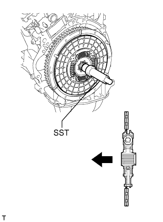 |
Вставьте SST в ведомый диск сцепления, а затем установите SST с ведомым диском сцепления на маховик.
| Со стороны маховика |
| 7. УСТАНОВИТЕ КОЖУХ СЦЕПЛЕНИЯ В СБОРЕ (для моделей с механической трансмиссией) |
| 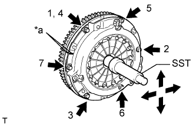 |
Совместите метки на кожухе сцепления и маховике.
| *a | Метка |
Затяните 6 болтов в последовательности, показанной на рисунке, начиная с болта, который располагается сверху рядом со штифтом.
| 8. ПРОВЕРЬТЕ И ОТРЕГУЛИРУЙТЕ КОЖУХ СЦЕПЛЕНИЯ В СБОРЕ (для моделей с механической трансмиссией) |
 |
С помощью индикатора часового типа с роликовым датчиком проверьте отклонение конца диафрагменной пружины.
| 9. ПОДСОЕДИНИТЕ ТРУБКУ МАСЛЯНОГО РАДИАТОРА В СБОРЕ (для моделей с автоматической трансмиссией) |
Подсоедините трубку масляного радиатора с помощью болта.
| 10. ПОДСОЕДИНИТЕ ТРУБОПРОВОД НИЗКОГО ДАВЛЕНИЯ (для моделей с системой кондиционирования) |
Подсоедините всасывающий шланг и закрепите его болтом.
| 11. УСТАНОВИТЕ ПОДУШКУ ЗАДНЕЙ ОПОРЫ ДВИГАТЕЛЯ № 1 (для моделей с механической трансмиссией) |
Установите заднюю подушку опоры двигателя № 1 и закрепите ее 4 болтами.
| 12. УСТАНОВИТЕ ПОДУШКУ ЗАДНЕЙ ОПОРЫ ДВИГАТЕЛЯ № 1 (для моделей с автоматической трансмиссией) |
Установите подушку задней опоры двигателя на трансмиссию и закрепите ее 4 болтами.
Установите теплозащитный экран задней опоры двигателя на подушку опоры двигателя и закрепите болтом.
| 13. УСТАНОВИТЕ МЕХАНИЧЕСКУЮ ТРАНСМИССИЮ В СБОРЕ (для моделей с механической трансмиссией) |
Установите механическую трансмиссию на автомобиль (Нажмите здесь).
| 14. УСТАНОВИТЕ АВТОМАТИЧЕСКУЮ ТРАНСМИССИЮ В СБОРЕ (для моделей с автоматической трансмиссией) |
Установите автоматическую трансмиссию на автомобиль (Нажмите здесь).
| 15. УСТАНОВИТЕ КАРДАННЫЙ ВАЛ В СБОРЕ |
Совместите метки на фланце карданного вала и фланце дифференциала.
Установите карданный вал в сборе и закрепите его 4 болтами, 4 шайбами и 4 гайками.
Нанесите метки на фланец карданного вала и фланец раздаточной коробки.
Закрепите карданный вал в сборе с помощью 4 шайб и 4 гаек.
| 16. УСТАНОВИТЕ ПЕРЕДНИЙ КАРДАННЫЙ ВАЛ В СБОРЕ |
Совместите метки на вилке и фланце дифференциала.
Установите карданный вал в сборе и закрепите его 4 болтами, 4 шайбами и 4 гайками.
Совместите метки на вилке и фланце раздаточной коробки.
Закрепите карданный вал в сборе с помощью 4 шайб и 4 гаек.
| 17. ПОДСОЕДИНИТЕ ТОПЛИВОПРОВОДЫ № 1 И № 2 |
Подсоедините топливопроводы № 1 и № 2 (Нажмите здесь).
Установите зажим топливопровода № 2 на разъем топливопровода.
| 18. ПОДСОЕДИНИТЕ ПАТРУБОК ОТОПИТЕЛЯ В СБОРЕ |
Для моделей с задним подогревателем:
Подсоедините 4 шланга и патрубок отопителя.
| *A | Для моделей без заднего подогревателя |
| *B | Для моделей с задним подогревателем |
| *a | Верх |
| *b | Левая сторона |
| *c | Правая задняя сторона |
Для моделей без заднего подогревателя
Подсоедините 2 шланга и патрубок отопителя.
| 19. ПОДСОЕДИНИТЕ ЖГУТ ЭЛЕКТРОПРОВОДКИ ДВИГАТЕЛЯ |
Подсоедините разъем ECM.
 |
Присоедините уплотнительную шайбу к опоре жгута проводов.
| *1 | Уплотнительная шайба |
| *2 | Опора жгута проводов |
Пропустите жгут проводов в автомобиль и установите опору жгута проводов.
 |
Подсоедините 9 разъемов и зажим.
| *A | Для моделей с левосторонним рулевым управлением |
| *B | Для моделей с правосторонним рулевым управлением |
Установите дверцу перчаточного ящика (Нажмите здесь).
 |
Подсоедините разъем и вверните болт.
| 20. УСТАНОВИТЕ УСТАНОВОЧНЫЙ БОЛТ ВЕДУЩЕГО ДИСКА И МУФТЫ ГИДРОТРАНСФОРМАТОРА (для моделей с автоматической трансмиссией) |
Проверните коленчатый вал, чтобы обеспечить доступ к местам установки 6 установочных болтов муфты гидротрансформатора, и, удерживая ключом болт шкива коленчатого вала, вверните каждый болт.
Установите боковую крышку картера маховика.
| 21. УСТАНОВИТЕ СТАРТЕР В СБОРЕ |
Установите стартер и закрепите его 2 болтами.
Подсоедините провод стартера, зафиксировав соединение болтом и гайкой.
Закройте заглушку контакта.
Подсоедините разъем стартера.
С помощью болта подсоедините провод соединения с массой.
| 22. УСТАНОВИТЕ ГЕНЕРАТОР В СБОРЕ |
Установите кронштейн генератора на генератор и закрепите болтом.
Установите генератор и закрепите его 2 болтами.
Закрепите кронштейн генератора болтом.
Закрепите зажим жгута проводов.
Установите жгут проводов и закрепите его 2 болтами.
Подсоедините разъем генератора к генератору.
Подсоедините провод генератора и зафиксируйте соединение гайкой.
Закройте заглушку контакта.
| 23. УСТАНОВИТЕ КРОНШТЕЙН ЗАЖИМА ЖГУТА ПРОВОДОВ |
Установите кронштейн зажима жгута проводов и закрепите его болтом.
Закрепите зажим.
| 24. УСТАНОВИТЕ ЛЕВЫЙ ВЫПУСКНОЙ КОЛЛЕКТОР В СБОРЕ |
| 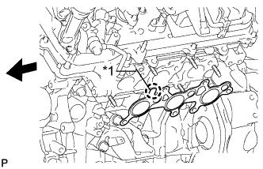 |
Установите новую прокладку на головку блока цилиндров.
| *1 | Выступание |
 | Передняя сторона |
Временно установите коллектор и закрепите его 6 новыми гайками.
Затяните 6 гаек в последовательности, показанной на рисунке.

| *1 | Для моделей с системой дополнительной подачи воздуха в нейтрализатор | *2 | для моделей без системы дополнительной подачи воздуха в нейтрализатор |
Подсоедините разъем датчика состава топливовоздушной смеси.
| 25. УСТАНОВИТЕ ТЕПЛОЗАЩИТНЫЙ ЭКРАН ВЫПУСКНОГО КОЛЛЕКТОРА № 2 |
Установите теплозащитный экран и закрепите его 3 болтами.
| 26. УСТАНОВИТЕ ВОЗДУШНЫЙ ПАТРУБОК № 2 (для моделей со вспомогательной системой подачи воздуха в нейтрализатор) |
| 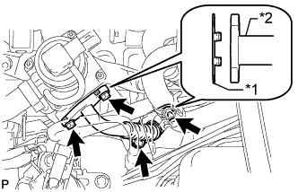 |
Установите 2 новых прокладки на воздушный патрубок № 2.
| *1 | Новая прокладка |
| *2 | Воздушный патрубок № 2 |
Установите воздушный патрубок № 2 и закрепите его 2 болтами и 2 гайками.
| 27. УСТАНОВИТЕ ОПОРУ КОЛЛЕКТОРА |
Установите опору коллектора и закрепите ее 3 болтами.
| 28. УСТАНОВИТЕ ПРАВЫЙ ВЫПУСКНОЙ КОЛЛЕКТОР В СБОРЕ |
 |
Установите новую прокладку на головку блока цилиндров.
| *1 | Выступы |
| Передняя сторона |
Временно установите коллектор и закрепите его 6 новыми гайками.
Затяните 6 гаек в последовательности, показанной на рисунке.

| *1 | Для моделей с системой дополнительной подачи воздуха в нейтрализатор | *2 | для моделей без системы дополнительной подачи воздуха в нейтрализатор |
Подсоедините разъем датчика состава топливовоздушной смеси.
| 29. УСТАНОВИТЕ ТЕПЛОЗАЩИТНЫЙ ЭКРАН ВЫПУСКНОГО КОЛЛЕКТОРА № 1 |
Установите теплозащитный экран и закрепите его 3 болтами.
| 30. ПОДСОЕДИНИТЕ ПРОМЕЖУТОЧНЫЙ ВАЛ № 2 РУЛЕВОГО УПРАВЛЕНИЯ В СБОРЕ (для моделей с правосторонним рулевым управлением) |
Для моделей с наклонной телескопической рулевой колонкой с электроприводом:
Подсоедините промежуточный вал № 2 рулевого управления (Нажмите здесь).
Для моделей с наклонной телескопической рулевой колонкой с ручным приводом:
Подсоедините промежуточный вал № 2 рулевого управления (Нажмите здесь).
| 31. УСТАНОВИТЕ ВОЗДУШНЫЙ ПАТРУБОК (для моделей со вспомогательной системой подачи воздуха в нейтрализатор) |
 |
Установите 2 новых прокладки на воздушный патрубок.
| *1 | Новая прокладка |
| *2 | Воздушная трубка |
Установите воздушный патрубок и закрепите его 2 болтами и 2 гайками.
| 32. УСТАНОВИТЕ ОПОРУ КОЛЛЕКТОРА № 2 |
Установите опору коллектора и закрепите ее 3 болтами.
| 33. УСТАНОВИТЕ ПРИЕМНУЮ ТРУБУ В СБОРЕ |
Установите приемную трубу (Нажмите здесь).
| 34. УСТАНОВИТЕ ОПОРНЫЙ РОЛИК В СБОРЕ (для моделей без системы кондиционирования) |
Установите опорный ролик и закрепите его 3 болтами.
| 35. УСТАНОВИТЕ КОМПРЕССОР СИСТЕМЫ КОНДИЦИОНИРОВАНИЯ В СБОРЕ (для моделей с системой кондиционирования) |
| 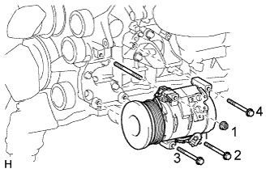 |
Вверните шпильку.
Временно установите компрессор системы кондиционирования и закрепите его 3 болтами и гайкой.
Затягивайте 3 болта и гайку в порядке, показанном на рисунке.
Подсоедините разъем.
| 36. ПОДСОЕДИНИТЕ ТРУБОПРОВОД НИЗКОГО ДАВЛЕНИЯ (для моделей с системой кондиционирования) |
Снимите с трубопровода виниловую ленту.
Нанесите необходимое количество компрессорного масла на новое кольцевое уплотнение и пригоночную поверхность компрессора системы кондиционирования.
Установите кольцевое уплотнение на трубопровод низкого давления.
| 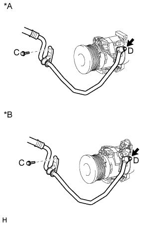 |
Установите трубопровод низкого давления на компрессор системы кондиционирования и закрепите 2 болтами.
| *A | кроме моделей с кодами GRJ150L-GKFEKV, GRJ150L-GKAEKV |
| *B | для моделей с кодами GRJ150L-GKFEKV, GRJ150L-GKAEKV |
| 37. ПОДСОЕДИНИТЕ ТРУБОПРОВОД ВЫСОКОГО ДАВЛЕНИЯ (для моделей с системой кондиционирования) |
Снимите с трубопровода виниловую ленту.
Нанесите необходимое количество компрессорного масла на новое кольцевое уплотнение и пригоночную поверхность компрессора системы кондиционирования.
Установите кольцевое уплотнение на трубопровод высокого давления.
Подсоедините трубопровод высокого давления к компрессору системы кондиционирования и закрепите его болтом.
| 38. УСТАНОВИТЕ ЛОПАСТНОЙ НАСОС В СБОРЕ |
Закрепите лопастной насос 2 болтами.
Установите 2 зажима жгута проводов.
Подсоедините 2 разъема.
| 39. УСТАНОВИТЕ ПОЛИКЛИНОВОЙ РЕМЕНЬ ВЕНТИЛЯТОРА И ГЕНЕРАТОРА |
 |
Установите поликлиновой ремень на каждую деталь.
| *1 | Лопастной насос |
| *2 | Насос охлаждающей жидкости |
| *3 | Опорный ролик № 2 |
| *4 | Генератор |
| *5 | Компрессор системы кондиционирования или опорный ролик |
| *6 | Опорный ролик № 1 |
| *7 | Коленчатый вал |
| *8 | Натяжитель поликлинового ремня |
Поверните натяжитель ремня против часовой стрелки и выньте штифт.
Убедитесь в том, что приводной ремень правильно располагается в углублениях шкива.
| 40. УСТАНОВИТЕ РАСШИРИТЕЛЬНЫЙ БАЧОК НА ВПУСКЕ ВОЗДУХА |
Установите новую прокладку в расширительный бачок на впуске воздуха.
 |
Установите расширительный бачок на впуске воздуха и закрепите его 4 болтами и 2 гайками в порядке, показанном на рисунке.
| *1 | Гайка |
Установите опору расширительного бачка № 1 и закрепите ее 2 болтами.
Закрепите зажим жгута проводов.
Установите опору расширительного бачка № 2 и закрепите ее 2 болтами.
Установите корпус дроссельной заслонки и закрепите его 2 болтами.
| 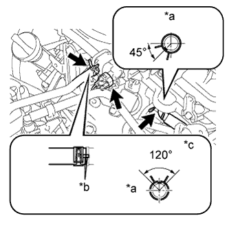 |
Подсоедините шланг вентиляции картера № 1.
Подсоедините разъем электровакуумного клапана № 1.
Подсоедините шланг подачи топлива № 1.
| *a | Передняя сторона |
| *b | Метка |
| *c | Верх |
 |
Подсоедините разъем корпуса дроссельной заслонки.
Подсоедините перепускной шланг охлаждающей жидкости № 4.
Подсоедините перепускной шланг охлаждающей жидкости № 5.
Подсоедините 2 хомута шланга отопителя.
| *a | Передняя сторона |
| *b | Метка |
| *c | Правая сторона |
| 41. УСТАНОВИТЕ ВОЗДУШНЫЙ ПАТРУБОК В СБОРЕ (для моделей со вспомогательной системой подачи воздуха в нейтрализатор) |
для ряда 1:
Совместите нанесенные краской метки с выступом и подсоедините воздушный патрубок к комплекту клапана системы снижения токсичности отработавших газов.
| *1 | Ребро |
| *2 | Метка, нанесенная краской |
| *a | Правая сторона |
| *b | Верх |
для стороны ряда 2:
Совместите нанесенные краской метки с выступом и подсоедините воздушный патрубок к комплекту клапана системы снижения токсичности отработавших газов № 2.
| *1 | Метка, нанесенная краской |
| *2 | Ребро |
| *a | Верх |
| *b | Левая сторона |
Заверните 3 болта.
| 42. УСТАНОВИТЕ РАДИАТОР В СБОРЕ |
 |
Вставьте крюки кронштейна радиатора в отверстия кронштейна радиатора.
Закрепите радиатор 4 болтами.
| 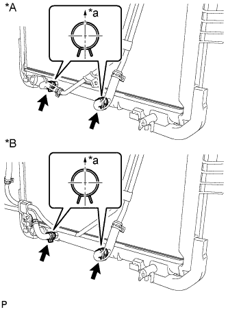 |
Для моделей с автоматической трансмиссией:
Подсоедините 2 патрубка масляного радиатора.
| *A | Для моделей с подогревателем |
| *B | Для моделей с масляным радиатором трансмиссии с воздушным охлаждением |
| *a | Верх |
| 43. УСТАНОВИТЕ КОЖУХ ВЕНТИЛЯТОРА |
Установите шкив вентилятора на насос системы охлаждения.
Поместите кожух вместе с вентилятором вискомуфты между радиатором и двигателем.
 |
Совместите нанесенные краской метки на головках шпилек насоса системы охлаждения с нанесенными краской метками такого же цвета на наружной кромке фланца вискомуфты и установите вискомуфту на насос системы охлаждения.
| *1 | Метка, нанесенная краской |
Установите вентилятор вискомуфты на насос системы охлаждения и предварительно закрепите его 4 гайками. Затяните гайки вручную до упора.
| 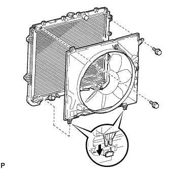 |
Присоедините захваты кожуха к радиатору, как показано на рисунке.
Закрепите кожух 2 болтами.
Установите поликлиновой ремень вентилятора и генератора (Нажмите здесь).
Затяните 4 гайки вентилятора вискомуфты.
| 44. ПОДСОЕДИНИТЕ ТРУБКУ МАСЛЯНОГО РАДИАТОРА (для моделей с масляным радиатором трансмиссии с воздушным охлаждением) |
| 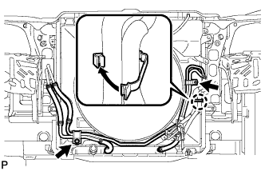 |
Подсоедините патрубок масляного радиатора с помощью 2 болтов и введите в зацепление захват, чтобы закрыть зажим гибкого шланга.
| 45. ПОДСОЕДИНИТЕ ТРУБКУ МАСЛЯНОГО РАДИАТОРА (для моделей с подогревателем) |
 |
Подсоедините патрубок масляного радиатора с помощью 2 болтов и введите в зацепление захват, чтобы закрыть зажим гибкого шланга.
| 46. УСТАНОВИТЕ РАСШИРИТЕЛЬНЫЙ БАЧОК РАДИАТОРА |
Установите расширительный бачок радиатора и закрепите его 3 болтами.
Подсоедините шланг расширительного бачка к верхней стороне верхнего бачка радиатора.
| 47. УСТАНОВИТЕ ПАТРУБОК РАДИАТОРА № 2 |
| 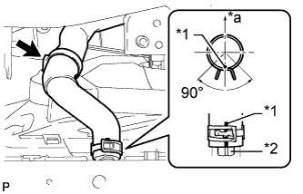 |
Подсоедините шланг радиатора № 2 таким образом, чтобы нанесенная на него краской метка оказалась совмещенной с выступом на радиаторе, как показано на рисунке.
| *1 | Метка, нанесенная краской |
| *2 | Выступ |
| *a | Верх |
 |
Подсоедините шланг радиатора № 2 таким образом, чтобы нанесенная на него краской метка оказалась совмещенной с выступом на приемнике охлаждающей жидкости, как показано на рисунке.
| *1 | Метка, нанесенная краской |
| *2 | Выступ |
| *a | Передняя сторона |
| *b | Верх |
| 48. УСТАНОВИТЕ ПАТРУБОК РАДИАТОРА № 1 |
 |
Подсоедините шланг радиатора № 1 к кожуху приемника охлаждающей жидкости, как показано на рисунке A.
| *1 | Метка, нанесенная краской |
| *2 | Выступ |
| *a | Передняя сторона |
| *b | Верх |
Подсоедините шланг радиатора № 1 таким образом, чтобы нанесенная на него краской метка оказалась совмещенной с выступом на радиаторе, как показано на рисунке B.
| 49. УСТАНОВИТЕ ЛЕВЫЙ БОКОВОЙ ОТРАЖАТЕЛЬ РАДИАТОРА |
Введите в зацепление 3 захвата.
Установите отражатель и закрепите его фиксатором.
| 50. УСТАНОВИТЕ ПРАВЫЙ БОКОВОЙ ОТРАЖАТЕЛЬ РАДИАТОРА |
Введите в зацепление 3 захвата.
Установите отражатель и закрепите его фиксатором.
| 51. УСТАНОВИТЕ ВЕРХНИЙ ДЕРЖАТЕЛЬ ПЕРЕДНЕГО БАМПЕРА |
Установите держатель и закрепите его 3 болтами.
| 52. УСТАНОВИТЕ КОРПУС ВОЗДУШНОГО ФИЛЬТРА В СБОРЕ |
Установите корпус воздушного фильтра и закрепите его 3 болтами.
Закрепите зажим жгута проводов.
Установите фильтрующий элемент воздушного фильтра.
| 53. УСТАНОВИТЕ ШЛАНГ И КРЫШКУ ВОЗДУШНОГО ФИЛЬТРА |
 |
Установите крышку и шланг воздушного фильтра.
| *a | Верх |
| *b | Передняя сторона |
| *c | Справа |
| *d | Совместите вырез шланга с выступом на дроссельной заслонке |
| *e | Метка, нанесенная краской |
Установите крышку воздушного фильтра со шлангом и закрепите ее болтом и 4 откидными защелками.
Затяните хомут.
Введите в зацепление 4 зажима и подсоедините вентиляционный шланг, вакуумный шланг и разъем датчика массового расхода воздуха.
| 54. УСТАНОВИТЕ НАКЛАДКУ ПЕРЕДНЕГО БАМПЕРА |
Установите облицовку переднего бампера (Нажмите здесь).
| 55. УСТАНОВИТЕ ДЕКОРАТИВНУЮ КРЫШКУ V-ОБРАЗНОГО ДВИГАТЕЛЯ |
 |
Совместите 2 крюка крышки V-образного двигателя с кронштейном. Затем совместите 2 уплотнительных шайбы декоративной крышки V-образного двигателя с 2 штифтами и нажмите на декоративную крышку V-образного двигателя, чтобы закрепить штифты.
| *1 | Штифт |
| *2 | Крюк |
| 56. УСТАНОВИТЕ ЛОТОК АККУМУЛЯТОРНОЙ БАТАРЕИ |
| 57. УСТАНОВИТЕ АККУМУЛЯТОРНУЮ БАТАРЕЮ |
| 58. УСТАНОВИТЕ ПРИЖИМ АККУМУЛЯТОРНОЙ БАТАРЕИ |
Установите прижим аккумуляторной батареи и закрепите его 2 гайками.
| 59. ПОДСОЕДИНИТЕ ПРОВОД К ПОЛОЖИТЕЛЬНОМУ ВЫВОДУ АККУМУЛЯТОРНОЙ БАТАРЕИ |
| 60. ДОБАВЬТЕ ОХЛАЖДАЮЩУЮ ЖИДКОСТЬ ДВИГАТЕЛЯ |
Затяните 2 пробки сливных кранов блока цилиндров.
Затяните пробку сливного крана радиатора вручную.
Долейте охлаждающую жидкость.
| Параметр / Устройство | Заданные условия | |
| Для моделей с автоматической трансмиссией | Для моделей без заднего подогревателя | 10,5 литра (11,1 кварты США, 9,2 английской кварты) |
| Для моделей с задним подогревателем | 12,3 литра (13,0 кварты США, 10,8 английской кварты) | |
| Для моделей с подогревателем | 12,8 литра (13,5 кварты США, 11,2 английской кварты) | |
| для моделей с механической трансмиссией | Для моделей без заднего подогревателя | 10,7 литра (11,3 кварты США, 9,4 английской кварты) |
| Для моделей с задним подогревателем | 12,5 литра (13,2 кварты США, 11,0 английской кварты) | |
Медленно налейте охлаждающую жидкость в расширительный бачок радиатора до отметки "F".
Установите пробку расширительного бачка.
Установите на место пробку радиатора.*1
Запустите двигатель и сразу же остановите его.*2
Подождите примерно 10 с. Затем снимите пробку радиатора и проверьте уровень охлаждающей жидкости. Если уровень охлаждающей жидкости снизился, добавьте охлаждающую жидкость.*3
Повторяйте шаги *1, *2 и *3 до тех пор, пока уровень охлаждающей жидкости не снизится.
Установите на место пробку радиатора.*4
Настройте систему кондиционирования, как описано ниже.*5
| Параметр / Устройство | Условие |
| Скорость вентилятора | Любая настройка, кроме OFF (ВЫКЛ) |
| Температура | В сторону "WARM" |
| Переключатель системы кондиционирования | Выкл |
Запустите двигатель, прогрейте его настолько, чтобы открылся термостат, а затем дайте поработать в таком состоянии несколько минут, чтобы прокачать охлаждающую жидкость.*6
Остановите двигатель и подождите, пока охлаждающая жидкость не охладиться до температуры окружающего воздуха. Затем снимите пробку радиатора и проверьте уровень охлаждающей жидкости.*7
Если уровень охлаждающей жидкости снизился, добавьте охлаждающую жидкость и прогрейте двигатель до открывания термостата.*8
Если уровень охлаждающей жидкости не снизился, убедитесь, что уровень жидкости в расширительном бачке радиаторе находится на линии F.
Если уровень охлаждающей жидкости ниже линии F, повторите шаги с *4 по *8.
Если уровень охлаждающей жидкости выше линии F, слейте охлаждающую жидкость до линии F.
| 61. ЗАЛЕЙТЕ МОТОРНОЕ МАСЛО |
Добавьте свежее масло.
| Класс масла по степени вязкости | Вязкость масла (SAE) |
| Универсальное моторное масло API сорт SL "Energy-Conserving", SM "Energy-Conserving" или ILSAC | 0W-20 5W-20 5W-30 10W-30 |
| Универсальное моторное масло API сорт SL или SM | 15W-40 20W-50 |
| Параметр / Устройство | Заданные условия |
| Слив и заполнение без замены масляного фильтра | 5,7 литра (6,0 кварты США, 5,0 английской кварты) |
| Слив и заполнение с заменой масляного фильтра | 6,1 л (6,4 кварты США, 5,4 английской кварты) |
| Заполнение сухой системы | 6,9 литра (7,3 кварты США, 6,1 английской кварты) |
| Параметр / Устройство | Заданные условия |
| Слив и заполнение без замены масляного фильтра | 5,7 литра (6,0 кварты США, 5,0 английской кварты) |
| Слив и заполнение с заменой масляного фильтра | 6,2 литра (6,6 кварты США, 5,5 английской кварты) |
| Заполнение сухой системы | 7,1 литра (7,5 кварты США, 6,2 английской кварты) |
| 62. УСТАНОВИТЕ ВЕНТИЛЯЦИОННУЮ РЕШЕТКУ В ВЕРХНЕЙ ЧАСТИ КОЖУХА В СБОРЕ |
Установите вентиляционную решетку в верхней части кожуха (Нажмите здесь).
| 63. ПОДСОЕДИНИТЕ ПРОВОД К ОТРИЦАТЕЛЬНОМУ ВЫВОДУ АККУМУЛЯТОРНОЙ БАТАРЕИ |
| 64. ПРОВЕРЬТЕ, НЕТ ЛИ УТЕЧЕК ТОПЛИВА |
После технического обслуживания топливной системы проверьте ее на отсутствие утечек топлива.
Подсоедините портативный диагностический прибор к DLC3.
Включите зажигание (IG) и портативный диагностический прибор.
Войдите в следующие меню: Powertrain / Engine and ECT / Active Test / Control the Fuel Pump/Speed.
Убедитесь в отсутствии утечек топлива из топливной системы.
При обнаружении утечки топлива отремонтируйте или замените детали, если необходимо.
Выключите зажигание.
Отсоедините портативный диагностический прибор от DLC3.
| 65. ПРОВЕРЬТЕ, НЕТ ЛИ УТЕЧЕК МОТОРНОГО МАСЛА |
Запустите двигатель. Убедитесь, что утечки масла отсутствуют в узлах, на которых выполнялись работы.
| 66. ПРОВЕРЬТЕ, НЕТ ЛИ УТЕЧЕК ОТРАБОТАВШИХ ГАЗОВ |
| 67. ПРОВЕРЬТЕ УРОВЕНЬ МОТОРНОГО МАСЛА |
Прогрейте двигатель, а затем остановите его и подождите 5 мин.
Убедитесь, что уровень моторного масла находится между отметкой низкого и максимального уровней щупа проверки уровня масла.
Если уровень низкий, проверьте, нет ли утечек, и долейте масло до максимальной отметки.
| 68. УСТАНОВИТЕ ВЕРХНЕЕ УПЛОТНЕНИЕ КРОНШТЕЙНА РАДИАТОРА |
Установите верхнее уплотнение кронштейна радиатора и закрепите его 13 фиксаторами.
| 69. УСТАНОВИТЕ УПЛОТНЕНИЕ № 1 МЕЖДУ ФАРТУКОМ ПРАВОГО ПЕРЕДНЕГО КРЫЛА И РАМОЙ |
Закрепите уплотнение между фартуком переднего крыла и рамой № 1 5 фиксаторами.
| 70. УСТАНОВИТЕ УПЛОТНЕНИЕ № 1 МЕЖДУ ФАРТУКОМ ЛЕВОГО ПЕРЕДНЕГО КРЫЛА И РАМОЙ |
Закрепите уплотнение между фартуком переднего крыла и рамой № 1 5 фиксаторами.
| 71. УСТАНОВИТЕ УПЛОТНЕНИЕ ФАРТУКА ПРАВОГО ПЕРЕДНЕГО КРЫЛА |
Закрепите уплотнение фартука переднего крыла 5 фиксаторами.
| 72. УСТАНОВИТЕ УПЛОТНЕНИЕ ФАРТУКА ЛЕВОГО ПЕРЕДНЕГО КРЫЛА |
Закрепите уплотнение фартука переднего крыла 5 фиксаторами.
| 73. УСТАНОВИТЕ ЗАДНЮЮ ЗАЩИТУ КАРТЕРА ДВИГАТЕЛЯ В СБОРЕ |
Установите заднюю защиту картера двигателя и закрепите ее 4 болтами.
| 74. УСТАНОВИТЕ НИЖНЮЮ КРЫШКУ ТРАНСМИССИИ |
Установите нижнюю крышку трансмиссии и закрепите ее 2 болтами.
| 75. УСТАНОВИТЕ ЗАЩИТУ КАРТЕРА ДВИГАТЕЛЯ № 1 В СБОРЕ |
 |
Присоедините защиту картера двигателя к кузову автомобиля, как показано на рисунке.
Вверните 4 болта.
| 76. УСТАНОВИТЕ НИЖНЮЮ НАКЛАДКУ ПЕРЕДНЕГО БАМПЕРА |
Установите нижнюю облицовку переднего бампера и закрепите ее 5 болтами и фиксатором.
| 77. ВЫПОЛНИТЕ СБРОС ПАМЯТИ (для моделей с автоматической трансмиссией) |
Выполните сброс памяти (Нажмите здесь).
| 78. ПРОВЕРЬТЕ УГОЛ ОПЕРЕЖЕНИЯ ЗАЖИГАНИЯ |
Прогрейте двигатель.
Если используется портативный диагностический прибор:
Подсоедините портативный диагностический прибор к DLC3.
Войдите в следующие меню: Powertrain / Engine and ECT / Data List / All Data / IGN Advance.
Проверьте угол опережения зажигания на холостых оборотах.
Убедитесь в том, что угол опережения зажигания возрастает сразу после увеличения частоты вращения коленчатого вала двигателя.
 |
Если портативный диагностический прибор не используется:
С помощью SST соедините контакты 13 (TC) и 4 (CG) на DLC3.
| *a | Вид спереди разъема DLC3 |
Подсоедините щуп стробоскопа к проводу разъема катушки зажигания, идущему к цилиндру № 1.
 |
Проверьте угол опережения зажигания на холостых оборотах.
Отсоедините SST от DLC3.
Проверьте угол опережения зажигания на холостых оборотах.
Отсоедините стробоскоп от двигателя.
| 79. ПРОВЕРЬТЕ ЧАСТОТУ ВРАЩЕНИЯ КОЛЕНЧАТОГО ВАЛА ДВИГАТЕЛЯ НА ХОЛОСТОМ ХОДУ |
Прогрейте двигатель.
Если используется портативный диагностический прибор:
Подсоедините портативный диагностический прибор к DLC3.
Войдите в следующие меню: Powertrain / Engine and ECT / Data List / All Data / Engine Speed.
Проверьте частоту вращения коленчатого вала двигателя на холостом ходу.
| 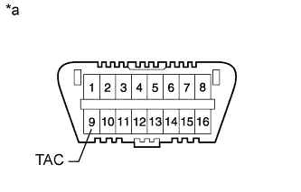 |
Если портативный диагностический прибор не используется:
Подсоедините SST к контакту 9 (TAC) разъема DLC3.
| *a | Вид спереди разъема DLC3 |
Дайте двигателю поработать с частотой вращения коленчатого вала 2500 об/мин в течение примерно 90 с.
Проверьте частоту вращения коленчатого вала двигателя на холостом ходу.
| 80. ПРОВЕРЬТЕ СОДЕРЖАНИЕ CO/CH |
Запустите двигатель.
Запустите двигатель на оборотах 2500 об/мин и дайте ему поработать, по крайней мере, в течение 180 секунд.
В режиме холостого хода двигателя вставьте пробник газоанализатора для определения содержания CO/CH в выхлопную трубу не менее чем на 40 см (1,31 фута).
Немедленно проверьте концентрацию CO/CH при работе двигателя на холостом ходу и/или при частоте вращения коленчатого вала двигателя 2500 об/мин.
Если концентрация CO/CH не соответствует местным нормам, выполните поиск неисправности и устраните ее в порядке, указанном ниже.
Проверьте работу датчика A/F (Нажмите здесь) и подогреваемого кислородного датчика (Нажмите здесь).
В таблице ниже перечислены возможные неисправности. Проведите проверку и при необходимости устраните причины неисправности.
| CO | CH | Признак | Причины |
| Нормальная | Высокая | Неравномерный холостой ход |
|
| Низкая | Высокая | Неравномерный холостой ход (Колебания значения СH) |
|
| Высокая | Высокая | Неравномерный холостой ход (Из выпускной трубы идет черный дым) |
|
| 81. УСТАНОВИТЕ КАПОТ В СБОРЕ |
| 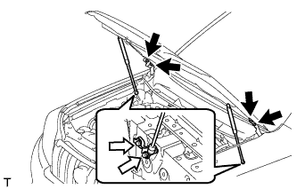 |
Установите капот и закрепите его 8 болтами.
| болт A |
 | болт B |
Подсоедините шланг форсунки стеклоомывателя.
| 82. ОТРЕГУЛИРУЙТЕ КАПОТ В СБОРЕ |
Отрегулируйте положение капота.
 |
Ослабьте 4 болта петель капота.
Для регулировки зазора между капотом и передним крылом подвиньте капот.
Затяните 4 болта петель капота.
Отрегулируйте высоту передней части капота с помощью резиновых амортизаторов.
| 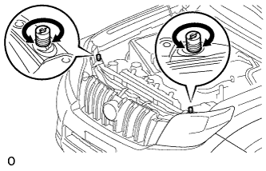 |
Отрегулируйте 2 резиновых амортизатора таким образом, чтобы капот и крыло оказались на одном уровне.
Отрегулируйте замок капота.
 |
Ослабьте 3 болта.
Отрегулируйте замок капота и затяните 3 болта.
Убедитесь, что защелка плавно входит в зацепление с замком капота.
| 83. ЗАПРАВЬТЕ ХЛАДАГЕНТ (для моделей с системой кондиционирования) |
Используя вакуумный насос, выполните вакуумную очистку.
Заправьте хладагент HFC-134a (R134a).
| Код модели | Тип системы кондиционирования | Блок охлаждения | Заправочный объем хладагента |
| Кроме моделей, перечисленных ниже | Для моделей без заднего кондиционера | Для моделей с холодильной камерой | 600 +/-30 г (21,2 +/-1,1 унции) |
| Для моделей без холодильной камеры | 550 +/-30 г (19,3 +/-1,1 унции) | ||
| Для моделей с задним кондиционером | Для моделей с холодильной камерой | 800 +/-30 г (28,2 +/-1,1 унции) | |
| Для моделей без холодильной камеры | 770 +/-30 г (27,2 +/-1,1 унции) | ||
| Для моделей с задним кондиционером Для моделей, предназначенных для эксплуатации в холодном климате | Для моделей без холодильной камеры | 720 +/-30 г (25,3 +/-1,1 унции) | |
| TRJ150L-GKMEKV TRJ150L-GKPEKV TRJ155L-GJPEKV GRJ150L-GKFEKV GRJ150L-GKAEKV KDJ150L-GKFEYV KDJ150L-GKAEYV | Для моделей без заднего кондиционера | Для моделей с холодильной камерой | 600 +/-30 г (21,2 +/-1,1 унции) |
| Для моделей без холодильной камеры | 550 +/-30 г (19,3 +/-1,1 унции) или 600 +/-30 г (21,2 +/- 1,1 унции) *1 | ||
| Для моделей с задним кондиционером | Для моделей с холодильной камерой | 800 +/-30 г (28,2 +/-1,1 унции) | |
| Для моделей без холодильной камеры | 770 +/-30 г (27,2 +/-1,1 унции) |

| 84. ПРОГРЕЙТЕ ДВИГАТЕЛЬ (для моделей с системой кондиционирования) |
После заправки хладагента в течение, по крайней мере, 2 мин. прогрейте двигатель при частоте вращения коленчатого вала 1850 об/мин.
| 85. ПРОВЕРЬТЕ, НЕТ ЛИ УТЕЧЕК ГАЗООБРАЗНОГО ХЛАДАГЕНТА (для моделей с системой кондиционирования) |
После заправки газообразного хладагента с помощью галогенного течеискателя проверьте, нет ли утечек хладагента.
Перед проверкой обеспечьте выполнение следующих условий:
 |
С помощью галогенного течеискателя проверьте, нет ли утечки из трубопровода хладагента.
| *1 | Галогенный течеискатель |
| *a | Проверка на наличие утечек |
Если в сливном шланге утечка газа не обнаруживается, снимите блок управления электродвигателем вентилятора (сопротивление вентилятора) с блока охлаждения. Вставьте датчик галогенного течеискателя в блок и выполните испытание.
Отсоедините разъем и подождите примерно 20 мин. Поднесите галогенный течеискатель к контактному датчику давления и выполните испытание.